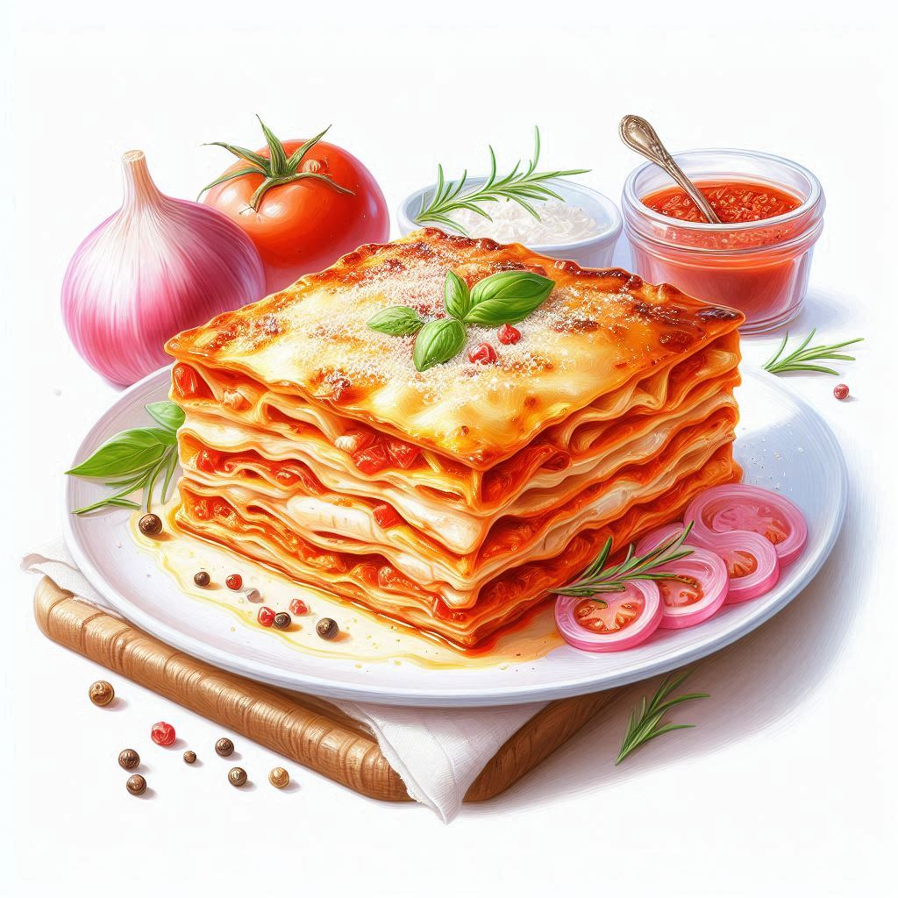

Lasagna

Description:
Lasagna is a delicious Italian dish made with layers of flat, wide pasta sheets. In between the pasta goes a rich ragu (meat sauce), creamy béchamel sauce, vegetables, and lots of cheese. It's all baked in the oven until bubbly and golden brown. There are many variations, but that's the classic idea.
Ingredients:
- Lasagna noodles (enough to cover a 9x13 inch baking dish in a single layer)
- Jar of your favorite marinara sauce
- Container of ricotta cheese
- Shredded mozzarella cheese
- Grated Parmesan cheese
- Salt and pepper
- Dried oregano (optional)
Steps:
- Preheat your oven to 375°F (190°C). Lightly grease a 9x13 inch baking dish.
- Cook the lasagna noodles according to package directions. Drain and rinse with cold water to prevent sticking.
- In a medium bowl, combine ricotta cheese with a pinch of salt and pepper. Add a sprinkle of dried oregano for extra flavor (optional).
- Spread a thin layer of marinara sauce on the bottom of the baking dish. Top with a single layer of cooked noodles.
- Dollop spoonfuls of ricotta cheese mixture evenly over the noodles. Sprinkle with some shredded mozzarella cheese.
- Repeat layers: sauce, noodles, ricotta, mozzarella. Aim for 3-4 layers total.
- Top the final layer with remaining marinara sauce and a generous amount of mozzarella cheese. Sprinkle with grated Parmesan cheese for a crispy crust (optional).
- Cover the dish loosely with foil and bake for 30 minutes.
- Remove foil and bake for an additional 15-20 minutes, or until the cheese is melted and bubbly. Let cool slightly before serving.